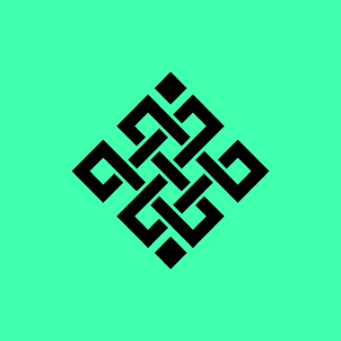

Easy content
Community members get tweet drafts instantly instead of staring at a blank composer.

Ritual Tweet ForgeBuild a tweet from topic, structure, tone, audience, length, CTA, and custom angle. Each generation requires a Ritual Testnet gas transaction.
Community members get tweet drafts instantly instead of staring at a blank composer.
The generator mixes hooks, topics, formats, CTAs, and random seeds so outputs vary heavily.
Users can save a favorite draft on Ritual Testnet, creating a real wallet interaction.
Local history